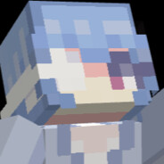

About me
Hi! my name is Pereau Florian and I'm 20. I'm a 2nd year computer science student at the University of Montpellier, I would like to work on cybersecurity or on simulations. I plan to obtain a Bachelor's degree in Montpellier after my 3rd year. But to obtain it I currently need to have an alternation during my 3rd year! After that I will try to go to an engineer school or do a master's degree.

But what about the real me?
I'm a very curious person, I like to learn new things and looking for new challenges. I like to play video games, I'm a big fan of the video games "Minecraft" as you can see on the main page of my website.
I'm also a big fan of Kanye West, I really like a lot of his songs and I think that he is a very important producer in the rap industry. he has revolutionized how rap and hip-hop songs are made, he has introduced revolutionary type beats to people.
I also like to watch anime, my favorite is Neon Genesis Evangelion! this show make us really think about ourselves and how we evolve in this
world as an adult. This is really shown in the anime by the fact that all the main protagonists are going through difficult episodes by being in an apocalyptic world
where Angels try to destroy Earth, but they still need to face against common issues like love and loneliness.
I also like to watch Trigun, it has the same vibe as Cowboy bebop where every episode has the purposes to spread a message
if you want to relax with the view of a beautiful island, you can click on HERE